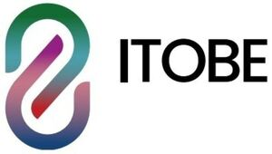

Trade Mark Journal No.2025/034 22 August 2025
WO0000001868584 (1,3,5,40,42)
Office of origin: Italy
Date of International Registration:18 February 2025
Date of designation in the UK:
18 February 2025

Shades of green, shades of blue and shades of red.
International priority date claimed: 14 February 2025
(Italy)
(302025000025596)
- Class 1
- Chemicals for the production of pharmaceuticals; chemicals for the production of cosmetics; enzymes for the production of nutraceuticals.
- Class 3
- Soaps for personal use; perfumery and fragrances; essential oils; cosmetics; hair care lotions; make-up; sun creams; household cleaners; soaps for domestic use; household fragrances; detergents and cosmetics for veterinary use.
- Class 5
- Pharmaceuticals; pharmaceutical compounds; nutraceuticals; food supplements; probiotic supplements; chemical-pharmaceutical preparations; medical and veterinary preparations; food and dietary substances for medical or veterinary use; food supplements for humans and animals; enzymes for medical and veterinary use.
- Class 40
- Custom manufacture of pharmaceuticals; custom manufacture of biopharmaceuticals; custom manufacture of medical and pharmaceutical products and formulations, nutritional and dietetic formulations; custom manufacture of pharmaceutical and dietetic compounds such as tablets, capsules, suspensions, liquids; custom manufacture of medicals for others.
- Class 42
- Development of pharmaceutical preparations and medicines; research on the subject of pharmaceuticals; conducting clinical trials for pharmaceutical products; pharmaceutical products development; design and development of the following goods: pharmaceutical, nutritional, and dietary formulations; research and development of drug delivery formulations used as agents for tablets, capsules, powders, injectables, suspensions, gels, and liquids; technological consultancy in the pharmaceutical field; scientific research for medical purposes.
ITOBE S.r.l.
Representative: BIANCHETTI & MINOJA with TREVISAN & CUONZO IPS SRL in breve TCBM SRL, Via Plinio 63, I-20129 Milano (MI), ITALY